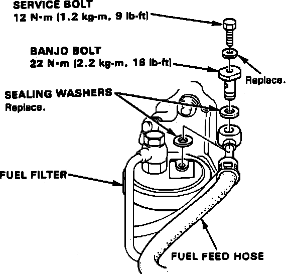

Engine: Service and Repair
Fig. 4 Fuel Pressure Relief:

1. Disconnect battery ground and positive cables.
2. Apply parking brake and block wheels.
3. Position hood vertically. Do not remove hood.
4. Drain engine oil, coolant and transaxle fluid, then reinstall drain plugs.
5. Remove air intake duct and air cleaner case.
6. Remove battery and battery tray.
7. Relieve fuel pressure, remove fuel filler cap, place shop towel over area, then slowly loosen service bolt on fuel filter one turn at a time, Fig. 4.
8. Remove fuel filter fuel feed hose.
9. Disconnect canister hose from throttle body.
10. Disconnect control unit electrical connectors, then remove control unit from bulkhead. Do not disconnect intake manifold vacuum hoses.
11. Remove transmission ground cable.
12. Disconnect distributor electrical connectors, then remove.
13. Loosen throttle cable locknut, then pull cable end from bracket and accelerator linkage.
14. Remove power steering pump attaching bolts, then remove power steering belt. Without disconnecting hoses, pull pump rearward and position aside.
15. Disconnect engine harness electrical connectors, then remove clamp.
16. Remove fuel return hose.
17. Disconnect brake booster vacuum hose from intake manifold.
18. Disconnect upper and lower radiator hoses and heater hoses.
19. Remove speed sensor. Do not disconnect oil hoses.
20. Disconnect cooling fan electrical connector and transaxle fluid cooler hoses and plug.
21. Remove radiator assembly.
22. Remove underbody splash shield.
23. On models equipped with A/C, remove A/C compressor leaving refrigerant lines attached.
24. On all models, remove driveshafts.
25. Disconnect alternator electrical connector, then remove adjusting bolt and belt, then remove alternator attaching bolt and bracket.
26. Remove exhaust pipe.
27. On models equipped with manual transaxle, remove clutch cable and shift lever torque rod and shift rod.
28. On models equipped with automatic transaxle, remove torque converter cover, cable holder cotter pin and control pin, then shift control cable.
29. On all models, install suitable engine lifting equipment.
30. Support transaxle using suitable jack stands.
31. Remove rear transaxle mount and bracket, Fig. 5.
32. Remove front transaxle mount and side transaxle mount and bracket.
33. Remove engine side mount.
34. Ensure engine and transaxle are free of vacuum, fuel or coolant hoses and electrical connectors.
35. Remove engine assembly.
36. Reverse procedure to install. Install and tighten engine mounts in sequence as shown in Fig. 5.